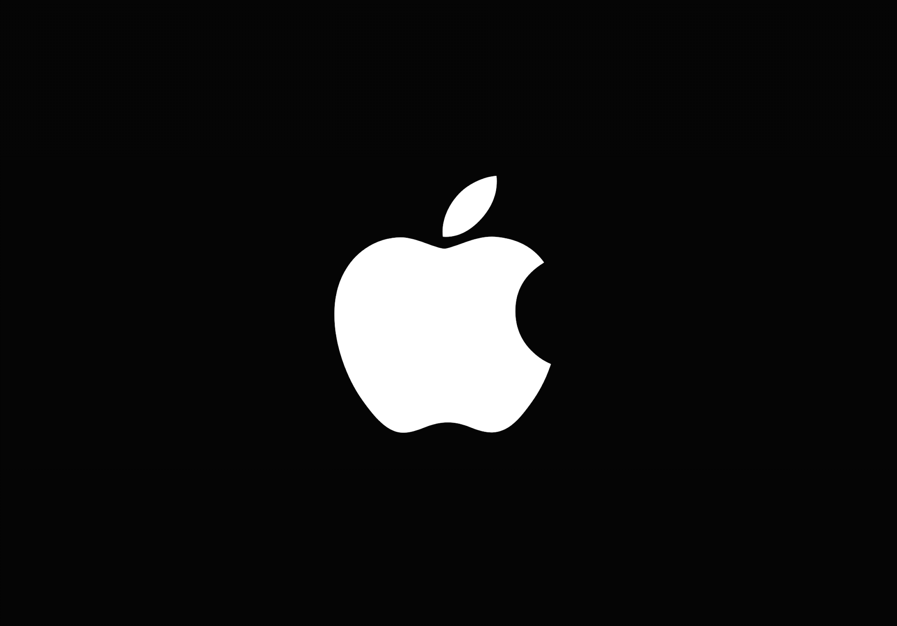

August 2021-Present
: *Cybersecurity Research TeamLead/Senior Developer*, Upland IN
: - Performed cybersecurity networking research and analvsis for Taylor University on behalf of Lockheed
: Martin Advanced Technology Labs
: - Supervised and coordinated team workflow
: - Tools used: mitmproxy, apache, openssl, wireshark, Frida
: - Summarized and presented unique findings to distinguished personnel
Jan 2023
: *Machine Learning Researcher* for Taylor University on behalf of Kratos Defense, Upland IN
: - Performed tests and analysis on various machine learning models and methods
: - Created and tested Kmeans Clustering, Convolutional Nueral Networks, and iForest models
: - My research was focused around orbiting satellite pattern-of-life analysis
: - Performed data processing and manipulation/cleaning
: - Presented findings to distinguished personel
Fall 2021
: *Full Stack Developer* for PocketDorm, Upland IN
: - Designed and implemented full-stack RESTful API, database connections in
: postgreSQL, and dynamic functionality with Vue.js
: - Presented functioning web app to peers showcasing the range of work completed
: - Web application was functional within 2 months
: - Learned new technologies on the fly and adapted to rising bugs and issues in the codebase
Summer 2020
: *Front-End Developer* for Canary, Waltham and Williamstown MA
: - Translate client mockups into functional web pages using: HTML/CSS and JavaScript
: - Clearly and effectively communicated with clients and team members
: - Exposure to development with unfamiliar technologies, such as Flutter and Yarn
Education
===================================================================
Bachelor of Science (2023)
: *Taylor University* Computer Science Digital Media/Systems
: Attended: 2021-2023
: GPA: 3.49
Animation
===================================================================
Drone Club Advertisement (Blender)
:
Apple Drip (Procreate)
: 
Lightsaber Loading Animation (SVG)
: